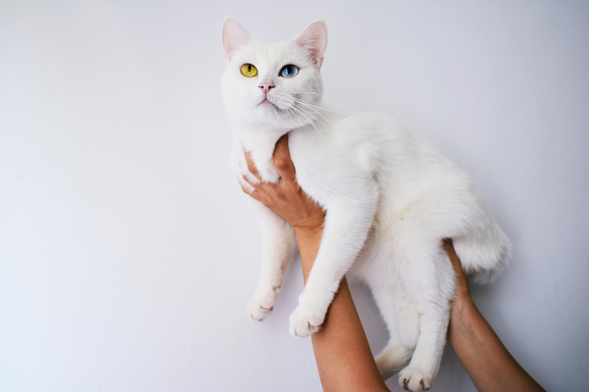
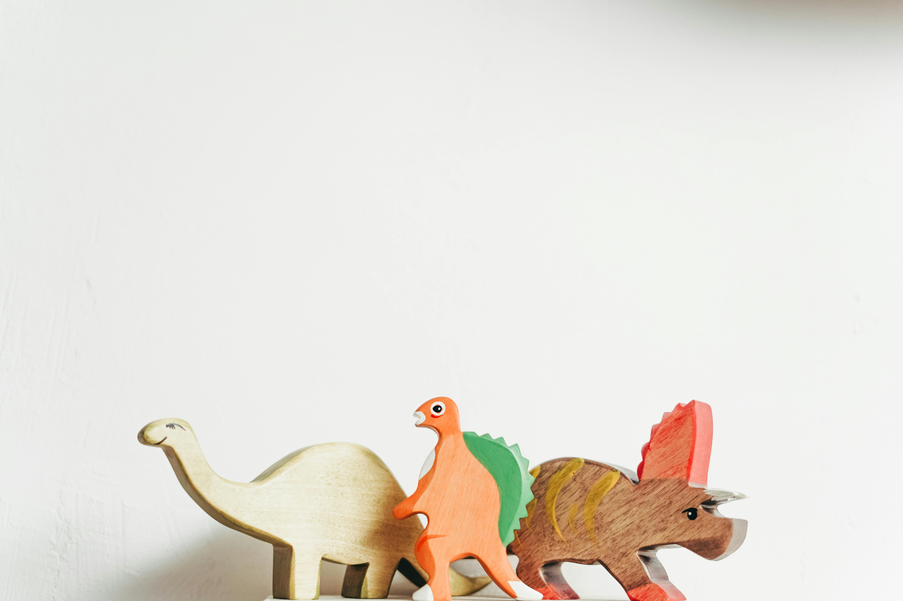
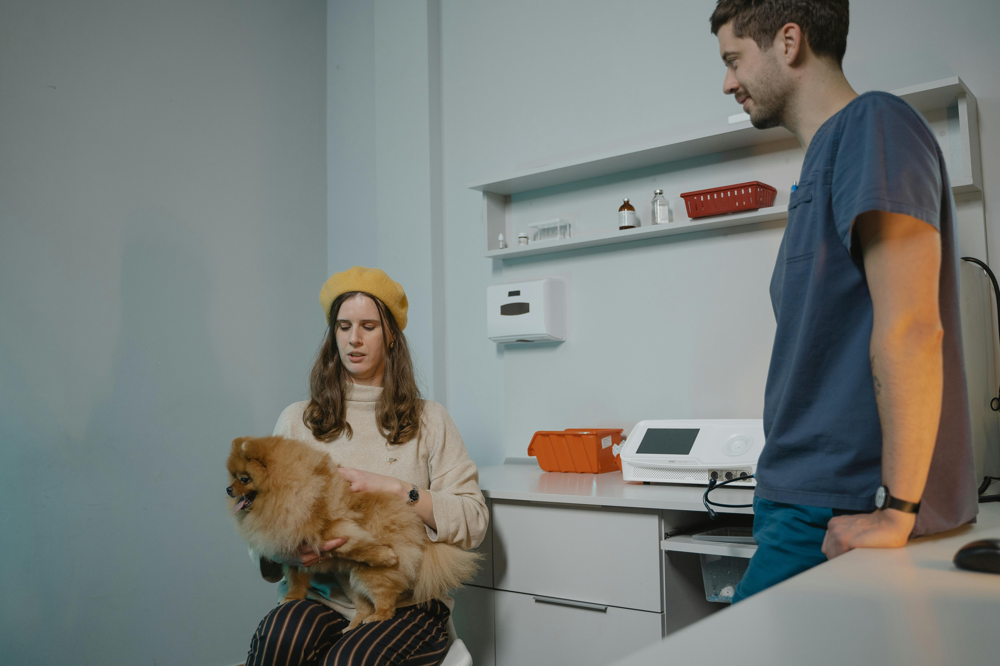
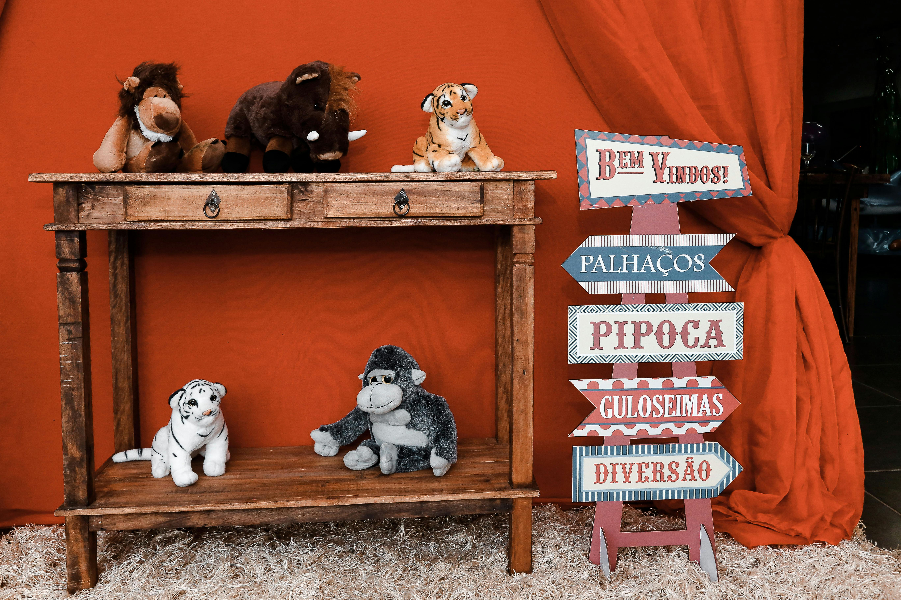
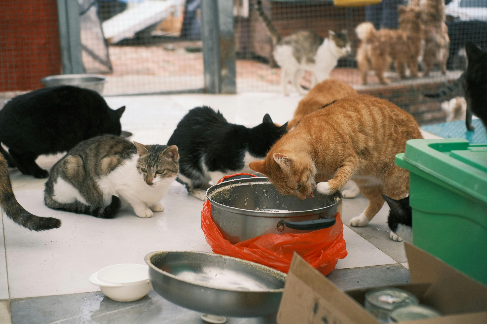

Explore our library of vet-approved articles on macro-nutrients, raw feeding, and joint longevity to help your high-performing dog thrive.
Vet Authored
Science-Backed
Every article is rigorously reviewed by our board of certified canine nutritionists and physiotherapists.
Stay updated with the latest in canine sports nutrition, preventative care, and dietary science.
Just like humans, dogs need pure protein sources to repair tissue after heavy exercise. Learn why isolated proteins are highly beneficial for muscular health and endurance.
Fish oil isn't just a trend. Discover how premium Omega-3 supplements lubricate joints, reduce inflammation, and prolong your dog's active years.

What happens when your dog rests? We break down the biological processes of tissue repair and why feeding windows matter as much as the food itself.

Agility requires short bursts of intense kinetic energy. Learn how adjusting fat-to-protein ratios can prevent mid-course fatigue and improve focus.

Not all proteins are created equal. We break down the differences in biological value between standard meat meals and pure protein isolates.

Switching foods too quickly can disrupt gut biomes. Here is our vet-approved 14-day guide to safely transitioning your dog to their new plan.